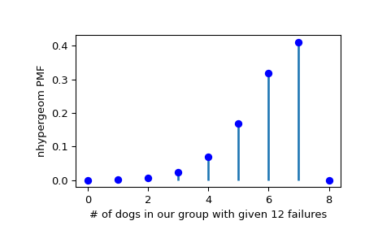

scipy.stats.nhypergeom¶
-
scipy.stats.nhypergeom= <scipy.stats._discrete_distns.nhypergeom_gen object>[source]¶ A negative hypergeometric discrete random variable.
Consider a box containing \(M\) balls:, \(n\) red and \(M-n\) blue. We randomly sample balls from the box, one at a time and without replacement, until we have picked \(r\) blue balls.
nhypergeomis the distribution of the number of red balls \(k\) we have picked.As an instance of the
rv_discreteclass,nhypergeomobject inherits from it a collection of generic methods (see below for the full list), and completes them with details specific for this particular distribution.Notes
The symbols used to denote the shape parameters (M, n, and r) are not universally accepted. See the Examples for a clarification of the definitions used here.
The probability mass function is defined as,
\[f(k; M, n, r) = \frac{{{k+r-1}\choose{k}}{{M-r-k}\choose{n-k}}} {{M \choose n}}\]for \(k \in [0, n]\), \(n \in [0, M]\), \(r \in [0, M-n]\), and the binomial coefficient is:
\[\binom{n}{k} \equiv \frac{n!}{k! (n - k)!}.\]It is equivalent to observing \(k\) successes in \(k+r-1\) samples with \(k+r\)’th sample being a failure. The former can be modelled as a hypergeometric distribution. The probability of the latter is simply the number of failures remaining \(M-n-(r-1)\) divided by the size of the remaining population \(M-(k+r-1)\). This relationship can be shown as:
\[NHG(k;M,n,r) = HG(k;M,n,k+r-1)\frac{(M-n-(r-1))}{(M-(k+r-1))}\]where \(NHG\) is probability mass function (PMF) of the negative hypergeometric distribution and \(HG\) is the PMF of the hypergeometric distribution.
The probability mass function above is defined in the “standardized” form. To shift distribution use the
locparameter. Specifically,nhypergeom.pmf(k, M, n, r, loc)is identically equivalent tonhypergeom.pmf(k - loc, M, n, r).References
- 1
Negative Hypergeometric Distribution on Wikipedia https://en.wikipedia.org/wiki/Negative_hypergeometric_distribution
- 2
Negative Hypergeometric Distribution from http://www.math.wm.edu/~leemis/chart/UDR/PDFs/Negativehypergeometric.pdf
Examples
>>> from scipy.stats import nhypergeom >>> import matplotlib.pyplot as plt
Suppose we have a collection of 20 animals, of which 7 are dogs. Then if we want to know the probability of finding a given number of dogs (successes) in a sample with exactly 12 animals that aren’t dogs (failures), we can initialize a frozen distribution and plot the probability mass function:
>>> M, n, r = [20, 7, 12] >>> rv = nhypergeom(M, n, r) >>> x = np.arange(0, n+2) >>> pmf_dogs = rv.pmf(x)
>>> fig = plt.figure() >>> ax = fig.add_subplot(111) >>> ax.plot(x, pmf_dogs, 'bo') >>> ax.vlines(x, 0, pmf_dogs, lw=2) >>> ax.set_xlabel('# of dogs in our group with given 12 failures') >>> ax.set_ylabel('nhypergeom PMF') >>> plt.show()
Instead of using a frozen distribution we can also use
nhypergeommethods directly. To for example obtain the probability mass function, use:>>> prb = nhypergeom.pmf(x, M, n, r)
And to generate random numbers:
>>> R = nhypergeom.rvs(M, n, r, size=10)
To verify the relationship between
hypergeomandnhypergeom, use:>>> from scipy.stats import hypergeom, nhypergeom >>> M, n, r = 45, 13, 8 >>> k = 6 >>> nhypergeom.pmf(k, M, n, r) 0.06180776620271643 >>> hypergeom.pmf(k, M, n, k+r-1) * (M - n - (r-1)) / (M - (k+r-1)) 0.06180776620271644
Methods
rvs(M, n, r, loc=0, size=1, random_state=None)
Random variates.
pmf(k, M, n, r, loc=0)
Probability mass function.
logpmf(k, M, n, r, loc=0)
Log of the probability mass function.
cdf(k, M, n, r, loc=0)
Cumulative distribution function.
logcdf(k, M, n, r, loc=0)
Log of the cumulative distribution function.
sf(k, M, n, r, loc=0)
Survival function (also defined as
1 - cdf, but sf is sometimes more accurate).logsf(k, M, n, r, loc=0)
Log of the survival function.
ppf(q, M, n, r, loc=0)
Percent point function (inverse of
cdf— percentiles).isf(q, M, n, r, loc=0)
Inverse survival function (inverse of
sf).stats(M, n, r, loc=0, moments=’mv’)
Mean(‘m’), variance(‘v’), skew(‘s’), and/or kurtosis(‘k’).
entropy(M, n, r, loc=0)
(Differential) entropy of the RV.
expect(func, args=(M, n, r), loc=0, lb=None, ub=None, conditional=False)
Expected value of a function (of one argument) with respect to the distribution.
median(M, n, r, loc=0)
Median of the distribution.
mean(M, n, r, loc=0)
Mean of the distribution.
var(M, n, r, loc=0)
Variance of the distribution.
std(M, n, r, loc=0)
Standard deviation of the distribution.
interval(alpha, M, n, r, loc=0)
Endpoints of the range that contains fraction alpha [0, 1] of the distribution